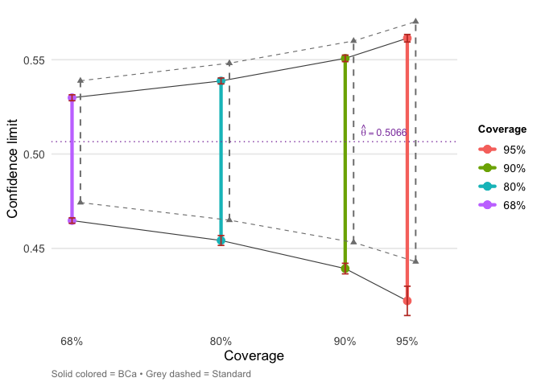

Bias-corrected and accelerated (BCa) bootstrap confidence intervals, computed almost automatically. The package provides two main functions:
-
bca_nonpar()for nonparametric bootstrap -
bca_par()for parametric bootstrap
Results integrate with the tidyverse via tidy(), glance(), and autoplot() methods.
Installation
# From CRAN
install.packages("bcaboot")
# Development version
# install.packages("devtools")
devtools::install_github("bnaras/bcaboot")Example
library(bcaboot)
data(diabetes)
Xy <- cbind(diabetes$x, diabetes$y)
rfun <- function(Xy) {
y <- Xy[, 11]; X <- Xy[, 1:10]
summary(lm(y ~ X))$adj.r.squared
}
set.seed(1234)
result <- bca_nonpar(Xy, B = 2000, func = rfun, verbose = FALSE)
result## conf.level bca.lo bca.hi std.lo std.hi
## 0.95 0.4221740 0.5613841 0.4429423 0.5701783
## 0.90 0.4392968 0.5507219 0.4531704 0.5599503
## 0.80 0.4541906 0.5387434 0.4649627 0.5481579
## 0.68 0.4647324 0.5298461 0.4742814 0.5388392
tidy(result)## # A tibble: 8 × 7
## conf.level method estimate conf.low conf.high jacksd.low jacksd.high
## <dbl> <chr> <dbl> <dbl> <dbl> <dbl> <dbl>
## 1 0.95 bca 0.507 0.422 0.561 0.00776 0.00201
## 2 0.95 standard 0.507 0.443 0.570 NA NA
## 3 0.9 bca 0.507 0.439 0.551 0.00280 0.00173
## 4 0.9 standard 0.507 0.453 0.560 NA NA
## 5 0.8 bca 0.507 0.454 0.539 0.00262 0.00157
## 6 0.8 standard 0.507 0.465 0.548 NA NA
## 7 0.68 bca 0.507 0.465 0.530 0.00143 0.00158
## 8 0.68 standard 0.507 0.474 0.539 NA NA
References
Efron, B., & Narasimhan, B. (2020). The Automatic Construction of Bootstrap Confidence Intervals. Journal of Computational and Graphical Statistics, 29(3), 608–619. https://doi.org/10.1080/10618600.2020.1714633